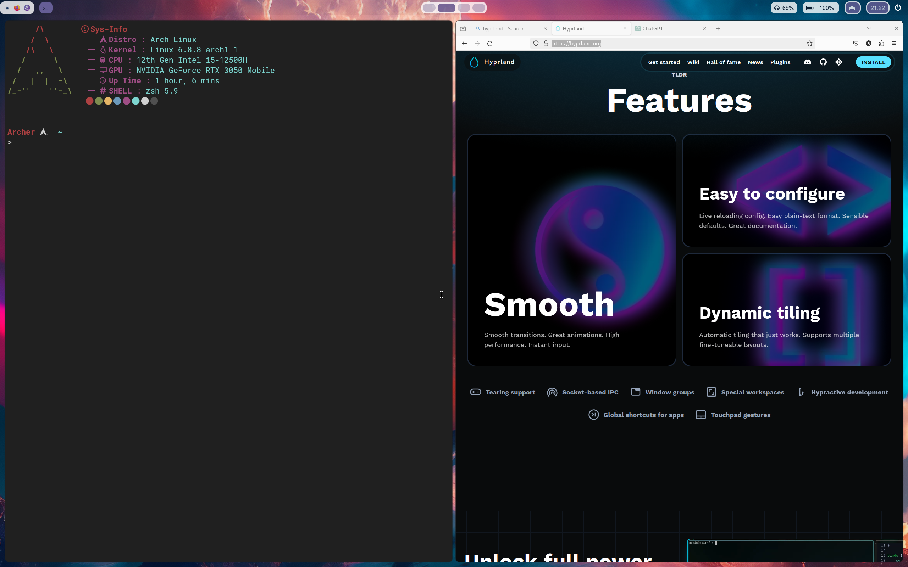

Hyprland Adventure
1. 介绍

2. 安装
由于本人使用 Archlinux, 下面所有命令均基于 Archlinux
安装命令如下, 自行加 sudo：
pacman -S hyprland qt5-wayland xorg-xwayland mesa glfw-wayland kitty wofi mesa
qt5-wayland 为 qt5 应用提供 wayland 支持， xorg-wayland 为 X11 程序提供wayland支持 kitty 是一个强大的终端模拟器，可以实现 tmux 的终端复用，还能不依赖其他插件预览图片，如果在安装完成后无法启动 kitty 请安装 GTK3 wofi 是一个 APPLauncher 还能够实现dmenu功能，有些东西不明白暂且不管，后面自然就明白了
pacman -S GTK3 pacman -S hyprland-git # 安装最新版的hyprland 可选
安装完上述包之后在终端输入 Hyprland 启动 Hyprland. 能够看到上方有个黄色的提示条，牢记。 可以通过修改配置禁止这个黄条条， Hyprland 配置文件在 ~/.config/hypr/hyprland.conf, 将第一行非注释代码删掉即可，保存后 hyprland 将自动 reload 配置文件。
多按几次 Super+Q 试试，你会感受到 Hyprland 的动画之流畅。
3. 配置
有机会精读wiki, 这将是你高度自定义的关键 Hyprland Wiki
3.1. 基本概念
- Window
所谓的 Window 就是你一个应用程序的所占位置

可以看到，上方有两个应用启动，Firefox 和 Kitty, 这就是两个 Window
- Workspace
- 所谓 Workspace 就是你在一个屏幕所看到的，还是上面的图片，你所看到的就是一个 Workspace。在 Hyprland 中，有个特殊的 Workspace 叫做 Special Workspace 可以实现应用最小化，之后会详细介绍。